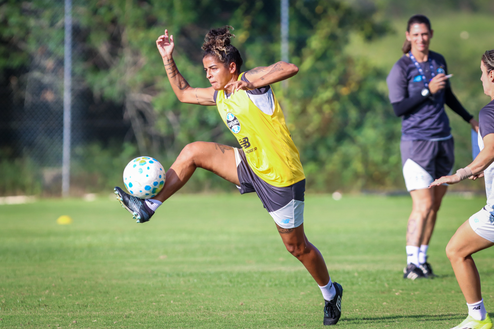
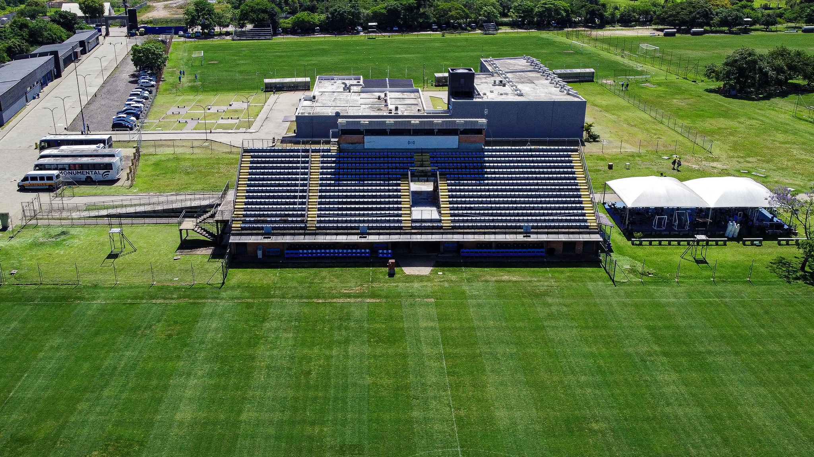

Camila Arrieta defende novamente o Paraguai na Liga das Nações Feminina
Atleta foi chamada para duas partidas da competição
Grêmio encerra preparação para enfrentar o Vitória pelo Brasileirão Feminino
Técnica Jéssica de Lima falou sobre a semana de treinamentos e a expectativa para o jogo em casa
.jpg)
Grêmio goleia o Criciúma pelo Brasileirão Feminino Sub-20
Mosqueteiras fizeram cinco gols em Santa Catarina
Grêmio Feminino anuncia Marlon Major como novo auxiliar técnico
Profissional irá atuar junto à auxiliar técnica Andréia Rosa

Grêmio sofre o revés fora de casa para o Palmeiras
Tricolor não somou pontos na 9ª rodada do Campeonato Brasileiro

Grêmio é destaque em ranking global de categorias de base
Tricolor ocupa posição entre os 50 maiores clubes do mundo em receitas com jovens atletas

Grêmio bate São Paulo e conquista primeira vitória no Brasileiro Sub-20
Em estreia do novo uniforme, Tricolor tem grande atuação e faz 2 a 0 nos paulistas fora de casa

Brasileirão: Venda de ingressos para Grêmio x Remo inicia nesta terça-feira
Sócios Torcedores podem adquirir entradas a partir das 16h no site do Tricolor